This note walks through how a computer is built and how it runs programs. It starts at the top level, with the processor, memory and I/O joined by an interconnect. It then goes down into caches, memory chips, disks, instruction sets, pipelines and control units, and back up to parallel machines and the operating-system support that hardware provides.
The topics follow the order of the lecture deck it is based on: overview and performance, system interconnection, the memory hierarchy, I/O, instruction sets, processor structure, RISC and superscalar design, parallel and multicore organization, the control unit and operating-system support.
The two terms describe one machine from two sides. Architecture is what a programmer can see and rely on. Organization is how the hardware delivers it.
| Aspect | Computer architecture | Computer organization |
|---|---|---|
| Definition | Attributes visible to the programmer that directly affect how a program executes logically | The operational units and their interconnections that realize the architecture |
| Examples | Instruction set, word size and data-type widths, addressing modes, I/O mechanisms | Control signals, interfaces to peripherals, memory technology, whether multiply is a hardware unit or repeated addition |
| Question answered | “Does the machine have a multiply instruction?” | “How is that multiply carried out?” |
| Rate of change | Kept stable for decades so software keeps running | Changes with each technology generation |
Separating the two lets a manufacturer sell a family of models. Every model shares one architecture and so runs the same software, while the organizations differ in price and speed. IBM System/360 (1964) was the first major example, and the x86 line still follows the same idea.
Structure is how components relate. Function is what each component does. A computer has four basic functions: data processing, data storage, data movement and control.
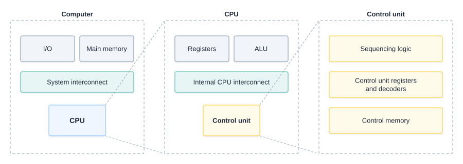
| Generation | Technology | Notable points |
|---|---|---|
| First (1946–1957) | Vacuum tubes | ENIAC; the IAS computer, built on von Neumann's stored-program concept (first described in 1945 for the EDVAC and completed at Princeton in 1952) |
| Second (1958–1964) | Transistors | Invented at Bell Labs in 1947. Smaller, cheaper, cooler, solid-state. Brought more complex ALUs and control units, high-level languages and system software |
| Third (1965–1971) | Small- and medium-scale integrated circuits | Many transistors on one silicon chip. IBM System/360 and DEC PDP-8, which used a single shared bus called the Omnibus |
| Later generations | LSI, VLSI and ULSI | Semiconductor main memory, then the microprocessor (Intel 4004 in 1971, followed by 8008, 8080, 8086 and so on) |
The IAS (von Neumann) machine
The IAS design fixed the template that almost every later general-purpose computer follows:
- Programs and data are stored together in one read–write main memory.
- An arithmetic and logic unit operates on binary data.
- A control unit fetches instructions from memory, interprets them and has them executed.
- I/O equipment runs under the control unit.
Integrated circuits
A computer is built from two kinds of element. Gates compute Boolean functions. Memory cells store one bit each. Wires between them move data and carry control signals. Integrated circuits made it possible to fabricate thousands, and later billions, of transistors at once on a silicon wafer. The wafer is cut into chips, and each chip holds many gates and cells.
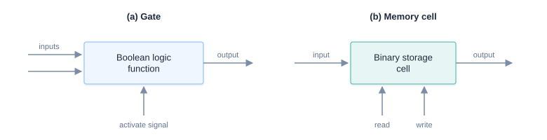
Moore's law
In 1965 Gordon Moore observed that the number of transistors on a chip was doubling every year. The pace slowed to about every 18 months in the 1970s and held there for decades. Its consequences:
- Logic and memory got steadily cheaper.
- Shorter electrical paths made circuits faster.
- Computers got smaller and could be used in more places.
- They needed less power and cooling.
- Fewer connections between chips made them more reliable.
Raw transistor speed is only part of the story. Modern processors keep their execution units busy with techniques that overlap or reorder work.
- PipeliningDifferent stages of several instructions run at the same time, like an assembly line
- Branch predictionThe processor guesses which way a branch will go and fetches along that path before the branch resolves
- Superscalar executionMore than one instruction is issued per clock cycle, through several parallel pipelines
- Data-flow analysisThe hardware works out which instructions depend on which results and schedules the work around those dependencies
- Speculative executionInstructions are run ahead of their place in the program, and their results are held aside until it is certain they are needed
Performance balance
Processor speed has grown much faster than memory speed. Designers close that gap in several ways:
- Make DRAM “wider” rather than “deeper”, and use wide data paths, so more bits arrive per access.
- Add more and larger caches.
- Put buffering or caching into the DRAM interface itself.
- Use faster interconnects and a hierarchy of buses.
I/O devices need the same care, because their data rates range from a keyboard to multi-gigabit network cards.
Limits on clock speed
- Power: power density rises with logic density and clock rate, and the heat becomes hard to remove.
- RC delay: thinner, more closely packed wires have higher resistance and capacitance, so signals slow down.
- Memory latency: memory cannot keep up with the processor.
For these reasons the industry moved to multicore chips, with several simpler processors on one die and large shared caches, instead of ever-faster single cores. Many Integrated Core (MIC) chips push this to dozens of general-purpose cores. GPUs offer hundreds or thousands of simple cores built for data-parallel work.
Basic performance measures
A clock with frequency f has cycle time τ = 1/f. A program of Ic instructions, averaging CPI cycles per instruction, takes:
T = Ic × CPI × τ
MIPS rate = Ic / (T × 10^6) = f / (CPI × 10^6)
MIPS and MFLOPS are easy to quote but misleading across different instruction sets, because one CISC instruction may do the work of several RISC ones. Measured run times of real programs are a better comparison.
Amdahl's law
Suppose a fraction f of a program's time can be sped up by a factor N, for example by running on N processors, and the rest (1 − f) cannot. Then:
Speedup = 1 / ((1 − f) + f / N)
As N grows, the speedup approaches 1/(1 − f). With 90% of the work parallel, no number of cores gives more than a 10× speedup. The serial part dominates, which is why software must be redesigned to exploit many cores. The same formula applies to any enhancement that affects only part of a system.
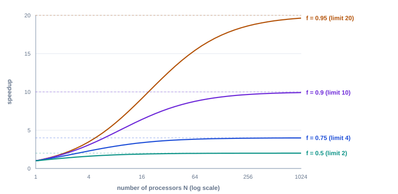
Benchmarks and SPEC
A good benchmark program:
- is written in a high-level language, so it is portable;
- is representative of a kind of programming, such as systems, numeric or commercial;
- is easy to measure;
- is widely distributed.
The System Performance Evaluation Corporation (SPEC) maintains the best-known suites, such as SPEC CPU.
Each result is a ratio of the reference machine's time to the system under test's time. The ratios across the programs in a suite are combined with a geometric mean, so the overall score does not depend on which machine is chosen as the reference.
| SPEC term | Meaning |
|---|---|
| Speed metric | Time to finish one copy of a benchmark: how fast the machine does a single task |
| Rate metric | Tasks completed per unit time with several copies running at once: throughput, which exploits multiple processors |
| Base metric | Required in every report, with strict, uniform compiler settings |
| Peak metric | Optional, allowing per-benchmark compiler tuning |
Several programs' results can be averaged in different ways:
- Arithmetic mean suits times, because it tracks total run time.
- Harmonic mean suits rates such as MIPS.
- Geometric mean suits normalized ratios.
Most processors sold are not in PCs but embedded in products: cars, appliances, network gear and medical devices. An embedded system is designed for one function within a larger system. Its typical constraints:
- real-time deadlines;
- low power and cost;
- small memory;
- long lifetimes.
Many embedded systems sense and act on the physical world through sensors, actuators, A/D and D/A converters and timers.
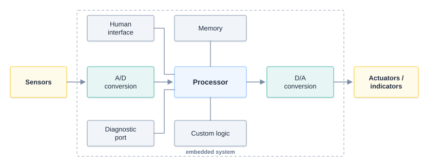
- MicrocontrollerProcessor, flash memory, RAM, timers and I/O ports on one chip. Used in deeply embedded devices that run a single dedicated program
- Application processorRuns a general OS such as Linux or Android, as in smartphones
- Dedicated processorBuilt for one task, possibly with its own hardware assists
- ARMA family of RISC architectures licensed to chip makers. Cortex-A cores serve applications, Cortex-R cores real-time work and Cortex-M cores microcontrollers. Dominant in mobile and embedded devices
The Internet of Things (IoT) connects such devices to the Internet, mostly for machine-to-machine traffic. At the other end of the network, cloud computing provides computing, storage and networking as on-demand services from large data centres. The cloud models are covered under parallel processing below.
In the von Neumann model the CPU contains the control unit, ALU and registers. It works with main memory, which holds instructions and data, and I/O modules. Control comes from a stored sequence of instructions rather than rewiring: the hardware is general-purpose and the program is software.
- PCProgram counter: the address of the next instruction to fetch
- IRInstruction register: the instruction currently being decoded and executed
- MARMemory address register: the address for the next memory read or write
- MBRMemory buffer register: data being written to, or just read from, memory
- ACAccumulator: temporary storage for operands and results
- I/O AR / I/O BRAddress and buffer registers for exchanges with an I/O module
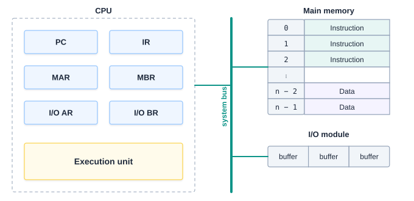
The instruction cycle
Each instruction goes through a fetch cycle and an execute cycle.
In the fetch cycle the processor reads the instruction at the address in the PC into the IR, then increments the PC.
In the execute cycle it carries out the instruction, which falls into one of four categories:
- processor–memory data transfer;
- processor–I/O data transfer;
- data processing in the ALU;
- control, which changes the sequence, for example a jump that loads a new value into the PC.
A single instruction may need several operand fetches and stores, so the execute part can include steps such as address calculation, operand fetch and operand store.
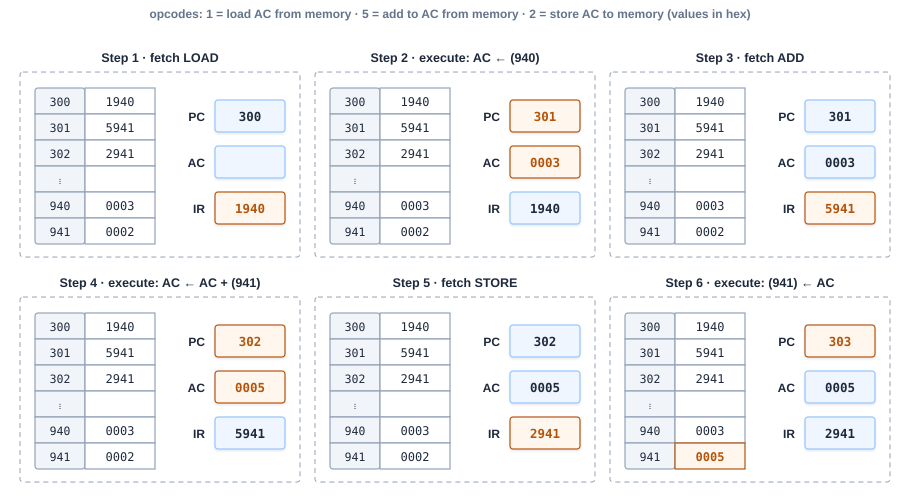
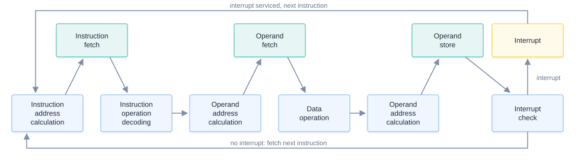
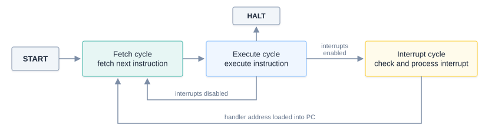
Interrupts
An interrupt lets another module break into the normal sequence. Its main purpose is efficiency: the processor keeps running other work instead of waiting idle for a slow device.
After each execute cycle the processor checks for a pending interrupt. If there is one, it:
- suspends the current program;
- saves its context, at least the PC and status;
- loads the PC with the start address of an interrupt handler.
When the handler finishes, the saved context is restored and the program resumes as if nothing had happened.
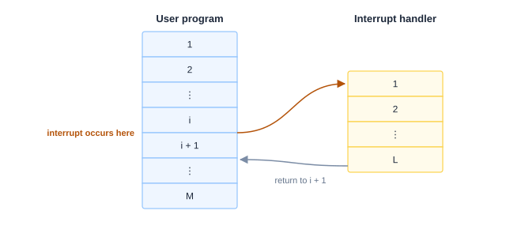
| Class | Raised by |
|---|---|
| Program | A condition arising from an instruction: overflow, division by zero, illegal instruction, memory protection violation |
| Timer | A timer inside the processor, letting the OS act on a regular schedule |
| I/O | An I/O controller, to signal that an operation completed normally or with an error |
| Hardware failure | Power failure, memory parity error and similar faults |
A second interrupt can arrive while one is being handled. There are two ways to deal with it:
- Sequential processing: interrupts are disabled while a handler runs, so pending interrupts wait their turn. This is simple, but ignores urgency.
- Nested processing: each interrupt has a priority, and a higher-priority one may interrupt a lower-priority handler. For example, a communications line that would lose data pre-empts a printer handler.
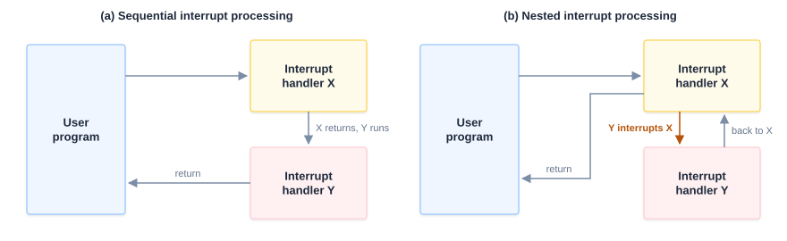
The interconnect must support these transfers:
- memory to processor (reads of instructions and data);
- processor to memory (writes);
- I/O to processor and processor to I/O;
- I/O to or from memory directly, which is DMA.
Bus interconnection
A bus is a shared communication pathway. A signal one device puts on it can be seen by all the others, but only one device can transmit successfully at a time. A system bus has three functional groups of lines:
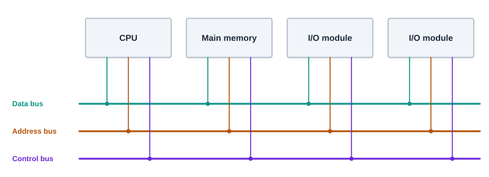
- Data busCarries the data. Its width, such as 32 or 64 lines, sets how many bits move per transfer and strongly affects performance
- Address busNames the source or destination of the data. Its width sets the maximum memory size, and its high-order bits can also select I/O ports
- Control busCarries commands and timing: memory read/write, I/O read/write, transfer acknowledge, bus request and grant, interrupt request and acknowledge, clock and reset
Point-to-point interconnect
A shared bus becomes a bottleneck at high data rates, especially with several cores sharing it. Bus arbitration and electrical limits get worse as speed rises. Modern systems therefore use dedicated point-to-point links with layered protocols, packets and serial lanes.
Intel QuickPath Interconnect (QPI) is one example. It gives each processor and I/O hub direct links and is organized in four layers:
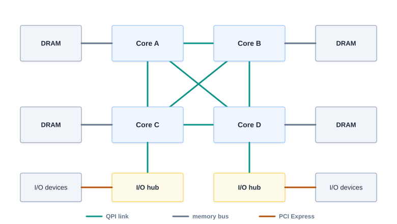
| QPI layer | Role |
|---|---|
| Physical | Wires and circuits. Each direction has 20 data lanes plus a clock, and moves 20-bit units called phits |
| Link | Moves 80-bit flits, with flow control (credits) and error control (CRC with retransmission) |
| Routing | Chooses the path a packet takes through the interconnect |
| Protocol | Packet-level rules, including the cache-coherence protocol between processors |
PCI Express (PCIe) is the point-to-point successor to the PCI bus. A root complex connects the processor and memory to switches and devices. Each link has one or more full-duplex lanes, and data is striped across the lanes. PCIe has three layers:
- Physical layer: lanes and encoding, for example 128b/130b.
- Data link layer: sequence numbers, CRC and acknowledgements for reliable delivery.
- Transaction layer: packetizes read and write requests, mostly as split transactions, where the request and its completion travel separately. It supports four address spaces: memory, I/O, configuration and message.
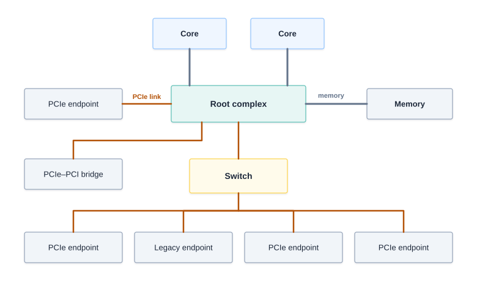
| Characteristic | Possibilities |
|---|---|
| Location | Internal (registers, cache, main memory) or external (disks and other devices reached through I/O controllers) |
| Capacity | Number of bytes or words |
| Unit of transfer | Word, block or record. For internal memory it usually equals the number of data lines into the module |
| Access method | Sequential, direct, random or associative |
| Performance | Access time, cycle time, transfer rate |
| Physical type | Semiconductor, magnetic, optical, magneto-optical |
| Physical characteristics | Volatile or non-volatile, erasable or non-erasable |
| Organization | How bits are arranged into words, a key design issue for random-access memory |
| Access method | How a location is reached | Example |
|---|---|---|
| Sequential | Records are passed in order until the right one comes along, so access time varies widely | Magnetic tape |
| Direct | A shared read–write head jumps to the right neighbourhood, then searches or waits within it | Magnetic disk |
| Random | Every location has its own wired-in address, and access time is constant | Main memory |
| Associative | A word is found by comparing part of its contents against all words at once | Cache tag lookup |
Performance parameters
- Access time (latency): for random-access memory, the time to complete one read or write. For other memories, the time to position the read–write mechanism.
- Memory cycle time: access time plus any recovery time before the next access can start, for example while signal lines settle or after a destructive read.
- Transfer rate: for random-access memory, 1/(cycle time). For non-random-access memory, the time to read or write N bits is TN = TA + n/R, where TA is the average access time, n the number of bits and R the transfer rate in bits per second.
The memory hierarchy
Every memory design trades off three things:
- faster access costs more per bit;
- more capacity costs less per bit;
- more capacity means slower access.
No single technology is both big and fast, so systems stack several levels.
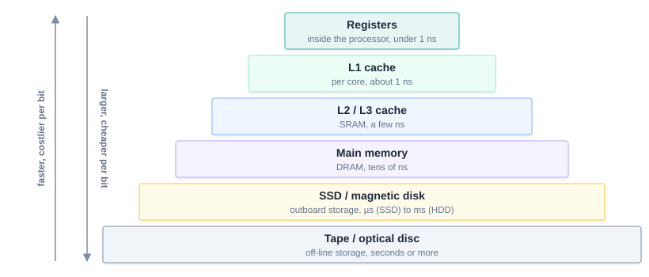
Going down the hierarchy:
- cost per bit falls;
- capacity rises;
- access time rises;
- the processor accesses that level less often.
The last point is what makes the hierarchy work. It holds because of locality of reference: over short periods, programs cluster their accesses.
- Temporal locality: recently used items are likely to be used again soon, for example loop code and counters.
- Spatial locality: items near recently used ones are likely to be used soon, for example sequential instructions and array elements.
With a two-level memory, hit ratio H, upper-level time T1 and lower-level time T2, the average access time is:
Tavg = H·T1 + (1 − H)(T1 + T2)
A high hit ratio makes the whole system nearly as fast as the upper level and nearly as cheap as the lower one.
A cache is a small, fast memory between the processor and main memory. It holds copies of recently used main-memory blocks. Each cache line stores one block plus a tag that identifies which block it is, along with control bits such as valid and dirty.
The processor asks for a word:
- On a hit, the cache supplies the word quickly.
- On a miss, the whole block containing the word is read from main memory into a line, and the word is delivered to the processor.
Fetching the whole block makes use of spatial locality.
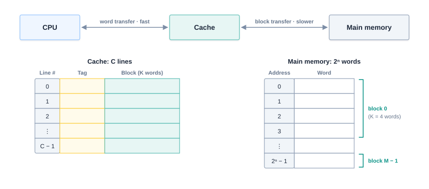
Main memory has 2n addressable words, grouped into blocks of K words. The cache has m lines, far fewer than the number of blocks. So the cache needs a rule for which line a block may occupy, and a way to tell which block is there now.
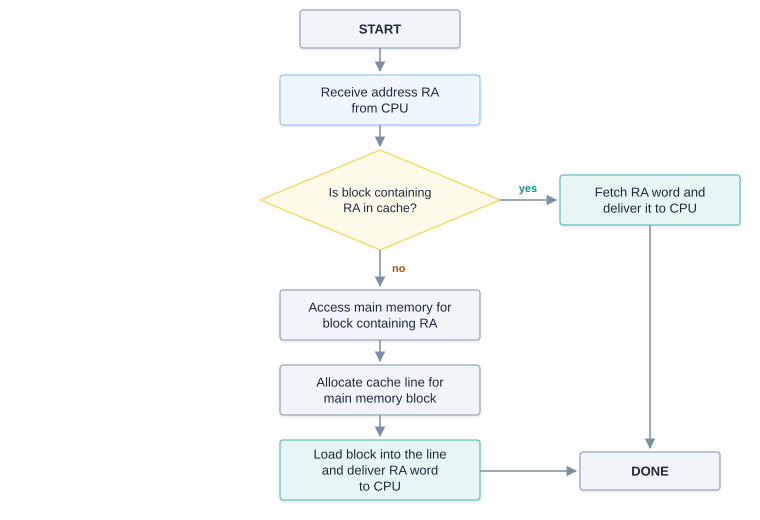
| Design element | Choices |
|---|---|
| Cache addresses | Logical (virtual) or physical |
| Cache size | Big enough for a good hit ratio, small enough to stay fast and cheap |
| Mapping function | Direct, fully associative, set associative |
| Replacement algorithm | LRU, FIFO, LFU, random |
| Write policy | Write-through, write-back |
| Line size | Bytes per block |
| Number of caches | Single or multilevel; unified or split |
Logical vs physical caches
With virtual memory, a memory management unit (MMU) translates each virtual address to a physical one.
- A logical cache sits before the MMU and uses virtual addresses. It is faster, because there is no translation on a hit. But two processes can use the same virtual address for different data, so it must be flushed or tagged with an address-space ID on each context switch.
- A physical cache sits after the MMU and avoids that problem.
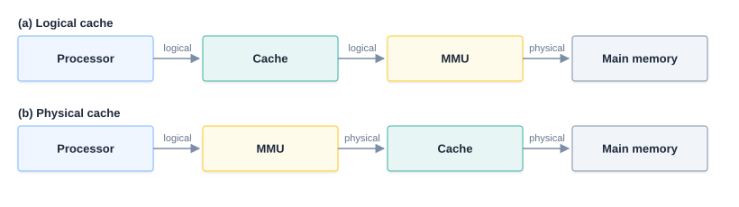
Mapping functions
A main-memory address is split into fields. The low bits pick the word within a block. The rest is the block number, which the mapping function splits again.
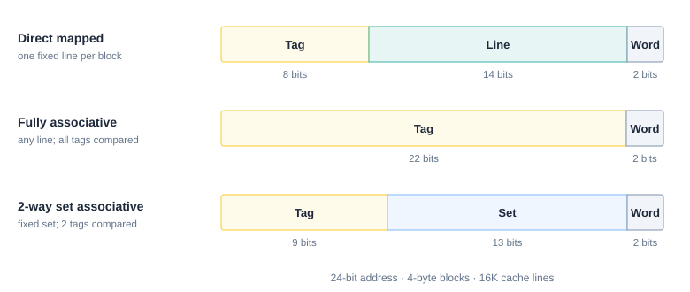
| Mapping | Rule | Strength | Weakness |
|---|---|---|---|
| Direct | Block j may go only in line i = j mod m | Simple and cheap: one tag comparison | Two busy blocks that map to the same line keep evicting each other (thrashing) |
| Fully associative | A block may go in any line. All tags are compared in parallel | Most flexible, highest hit ratio for a given size | Comparison logic for every line is expensive |
| k-way set associative | Cache split into v sets of k lines (m = v × k). Block j goes in set j mod v, in any of its k lines | Most of associativity's benefit for k comparators only. 2- and 4-way are common | More logic than direct mapping. Returns diminish beyond about 8–16 ways |
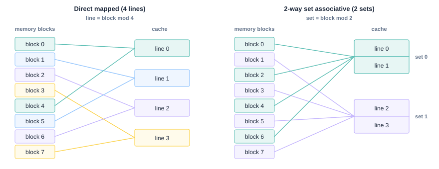
A victim cache is a small fully associative buffer, typically 4–16 lines, that holds lines recently evicted from a direct-mapped cache. It recovers many conflict misses cheaply.
Replacement algorithms
Direct mapping has no choice to make. Associative and set-associative caches must pick a victim, in hardware, at full speed.
- LRU (least recently used): evict the line in the set that has gone longest without a reference. It is the most effective and the most popular. For 2-way sets a single USE bit per set is enough.
- FIFO: evict the line that has been in the cache longest, a simple round-robin.
- LFU (least frequently used): evict the line with the fewest references, which needs a counter per line.
- Random: pick any line. It is only slightly worse than the usage-based schemes in simulations.
Write policy
An unmodified line can simply be overwritten. A modified line must reach main memory first. Two complications arise: I/O modules may access memory directly, and other processors have their own caches.
- Write-through: every write goes to the cache and to main memory. Memory is always valid, but write traffic is heavy and can become a bottleneck.
- Write-back: writes go only to the cache, and a dirty bit marks modified lines. A dirty line is written to memory only when it is replaced. This means far fewer memory writes, but parts of memory are stale, so I/O must go through the cache and the circuitry gets more complex.
On a write miss, a cache can use write allocate, which fetches the block and then writes it and is usual with write-back. Or it can use no-write allocate, which writes straight to memory and is usual with write-through.
With several caches, coherence also needs bus watching, hardware transparency, or non-cacheable regions. Multiprocessor coherence is covered under parallel processing below.
Line size
As the block size grows from very small, the hit ratio first rises, because more neighbouring words are brought in. It then falls, for two reasons:
- Fewer blocks fit in the cache, so blocks are evicted soon after being loaded.
- The extra words lie further from the requested word and are less likely to be used.
Sizes of 64 to 128 bytes are typical.
Multilevel and split caches
An on-chip L1 cache removes most external bus traffic. Behind it, L2 and usually L3 catch L1 misses before they reach DRAM. Today all three levels sit on the processor chip, and L3 is often shared between cores.
Caches are either unified or split:
- A unified cache holds instructions and data together, which balances the load between them automatically.
- A split cache has separate instruction and data caches. Pipelines prefer this at L1, because instruction fetch and operand access can then happen in the same cycle without contention.
The usual design is a split L1 with a unified L2 and L3.
Semiconductor main memory is built from cells, each with two stable states, 0 and 1. A cell can be written to set its state and read to sense it.
| Aspect | DRAM (dynamic) | SRAM (static) |
|---|---|---|
| Storage | Charge on a capacitor, gated by one transistor | A flip-flop of about six transistors |
| Refresh | Needed: the charge leaks away, so every row is periodically read and rewritten | Not needed while powered |
| Density and cost | Smaller cells, denser, cheaper per bit | Larger cells, more expensive |
| Speed | Slower | Faster |
| Nature | Analogue: a sense amplifier compares the charge against a threshold | Digital |
| Typical use | Main memory | Caches and registers |
Both are volatile and lose their contents without power.
| Memory type | Category | Erasure | Write mechanism |
|---|---|---|---|
| RAM | Read–write | Electrically, byte level | Electrically |
| ROM | Read-only | Not possible | Masks, at manufacture |
| PROM | Read-only | Not possible | Electrically, once, after manufacture |
| EPROM | Read-mostly | Ultraviolet light, whole chip | Electrically |
| EEPROM | Read-mostly | Electrically, byte level | Electrically (slow writes) |
| Flash | Read-mostly | Electrically, block level | Electrically |
ROM holds permanent data: microprograms, library routines, system programs such as BIOS, and function tables. Mask ROM is cheap in large volumes. PROM suits small runs.
Chip organization
Inside a DRAM chip the cells form a square array. The address is sent in two halves over the same pins:
- the row address, latched by RAS (row address strobe);
- then the column address, latched by CAS (column address strobe).
Multiplexing halves the number of address pins, and each added pin quadruples the capacity. Write-enable and output-enable lines control the direction of transfer. Chips are combined into modules: for example, enough chips side by side to supply all the bits of a word.
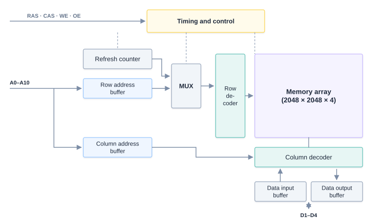
Interleaved memory
Main memory can be split into several independent banks. With K banks and consecutive words placed in different banks, up to K requests can be in progress at once. This raises the effective transfer rate for sequential access.
Error correction
Memory suffers two kinds of error:
- hard failures: permanent defects;
- soft errors: random, non-destructive bit flips caused by power glitches or radiation.
An error-correcting code stores K check bits alongside each M-bit data word. On a read, the check bits are recomputed and compared with the stored ones, and the result, called the syndrome, shows whether an error occurred and which bit to flip.
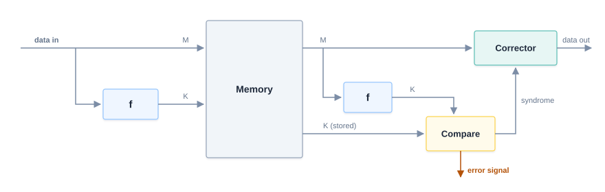
A Hamming code corrects any single-bit error when:
2^K − 1 ≥ M + K
For 8 data bits that means 4 check bits, and for 64 data bits it means 7. Adding one overall parity bit gives the usual SEC-DED code: single-error correcting, double-error detecting. That is 8 check bits per 64-bit word.
Advanced DRAM
- SDRAMSynchronous DRAM moves data in step with the system clock. The processor issues a request and does other work while the chip handles it. A programmable burst mode streams a run of consecutive words, and internal banks overlap accesses
- DDR SDRAMDouble data rate: data moves on both the rising and falling clock edges. Each generation (DDR2, DDR3, DDR4, DDR5) raises the bus clock and prefetch buffer size
- Flash memoryEach cell is a transistor with a floating gate that traps charge, so it is non-volatile. Erasure is per block and the number of program/erase cycles is limited
- NOR flashRandom access to individual words, so code can execute in place. Used for firmware and BIOS
- NAND flashOrganized in pages and blocks. Denser, cheaper and faster to write. Used in SSDs, USB drives and memory cards
Magnetic disk
A disk is a platter of non-magnetic substrate, nowadays usually glass, coated with magnetizable material. A conductive coil, the head, writes by magnetizing the surface and reads by sensing it, through magneto-resistive sensors in modern drives.
The surface is organized as follows:
- Data lies in concentric tracks, separated by gaps.
- Each track is divided into sectors, typically 512 bytes or 4 KB.
- The tracks at the same position on all platters form a cylinder.
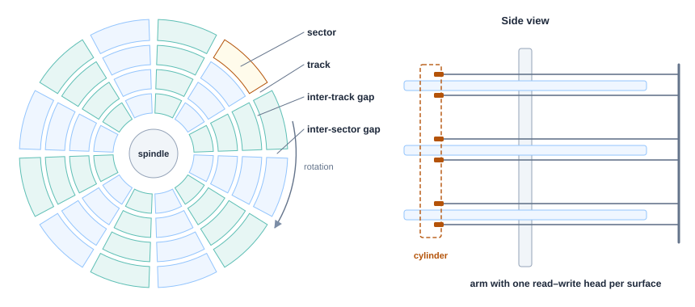
On how the tracks are laid out:
- Constant angular velocity keeps every track at the same number of bits, wasting space on the outer tracks.
- Multiple zone recording puts more sectors on the outer zones.
Drive types differ in several ways:
- fixed-head or movable-head;
- removable or non-removable;
- single- or double-sided;
- single or multiple platter.
Disk performance
To read a sector the drive must do three things:
- Seek: move the arm to the track, taking time Ts.
- Rotate: wait for the sector to come under the head. On average this is half a revolution.
- Transfer: read the data as it passes.
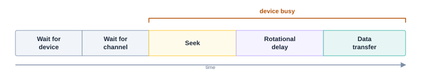
With rotation speed r revolutions per second, b bytes to transfer and N bytes per track:
Ta = Ts + 1/(2r) + b/(rN)
Seek and rotational delay dominate, so random reads of scattered sectors are much slower than sequential reads of the same amount of data.
Solid-state drives
| Aspect | NAND-flash SSD | Hard disk drive |
|---|---|---|
| Random I/O | Far higher I/O operations per second: no seek or rotation | Limited by mechanical seek and rotation |
| Durability | No moving parts, resistant to shock | Moving heads and platters |
| Power and noise | Low power, silent, runs cooler | Higher power, audible |
| Cost per bit | Higher | Lower, so better for bulk capacity |
| Wear | Limited program/erase cycles per block | No write-wear limit of this kind |
An SSD contains a controller, buffers and cache, error correction and many flash chips. Two practical issues:
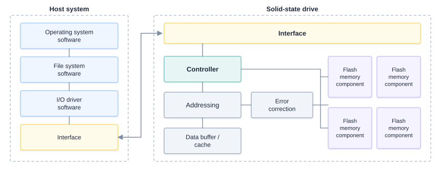
- Write slowdown: flash is written in pages but erased in whole blocks. As the drive fills, writes slow down, because a block's valid pages must be copied elsewhere before the block can be erased.
- Wear: cells wear out with use. Controllers use wear-levelling, over-provisioning, write caching and the TRIM command to extend the drive's life.
Optical and tape
- CD-ROM stores data as pits in a single spiral track, read by a laser at constant linear velocity. It is good for mass distribution but slow to access randomly.
- CD-R is write-once. CD-RW uses phase-change material, so it can be rewritten.
- DVD and Blu-ray raise capacity with shorter-wavelength lasers, smaller pits and multiple layers.
- Magnetic tape is sequential-access and the cheapest per bit. It is still used for backup and archives, today mostly in LTO cartridges.
Peripherals are not wired straight to the system bus, for three reasons:
- They work in very different ways.
- Their data rates differ from the processor's, mostly being far slower.
- They use their own data formats.
An I/O module sits between them and the bus. External devices fall into three groups: human-readable (screens, keyboards, printers), machine-readable (disks, sensors) and communication (links to remote devices). Each device exchanges control, status and data signals with its module.
- Control and timingCoordinates the flow of traffic between internal resources and external devices
- Processor communicationDecodes commands, exchanges data, reports status and recognizes its own addresses
- Device communicationExchanges commands, status and data with the device
- Data bufferingAbsorbs the speed difference between memory and the device
- Error detectionReports mechanical faults and transmission errors, for example with parity bits
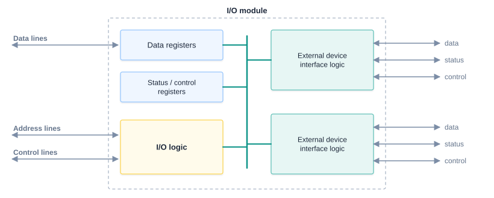
| Technique | Who moves the data | How completion is noticed | Processor cost |
|---|---|---|---|
| Programmed I/O | Processor, word by word | Processor polls the module's status bits | High: busy-waiting wastes processor time |
| Interrupt-driven I/O | Processor, word by word | Module raises an interrupt when ready | Lower: no polling, but every word still passes through the processor |
| Direct memory access (DMA) | DMA module, directly to and from memory | One interrupt when the whole block is done | Lowest: the processor only sets up the transfer and handles the final interrupt |
![Three techniques for reading a block of data. (a) Programmed I/O: issue a read command, read the I/O module's status repeatedly until it is ready, read a word, write it to memory, and repeat until done. (b) Interrupt-driven I/O: issue a read command, do something else, and on the interrupt read the status, read the word, write it to memory, and repeat. (c) DMA: issue a read-block command to the DMA module, do something else, and on the interrupt read the DMA module's status, then go on to the next instruction](static/coa-io-techniques.svg)
Programmed I/O
The processor issues a command and then waits by checking the status register again and again. I/O commands fall into four types:
- control: activate a device and tell it what to do;
- test: check the module's and device's status;
- read: get data from the module;
- write: send data to the module.
Devices can be addressed in two ways:
- Memory-mapped I/O: devices share the memory address space and are accessed with ordinary load and store instructions. This gives a large repertoire of instructions but uses up address space.
- Isolated I/O: a separate I/O address space with dedicated IN and OUT instructions.
Interrupt-driven I/O
The processor issues a command and goes on with other work. When the module is ready, it interrupts. The processor saves its context and runs the handler, which moves the data, and then resumes.
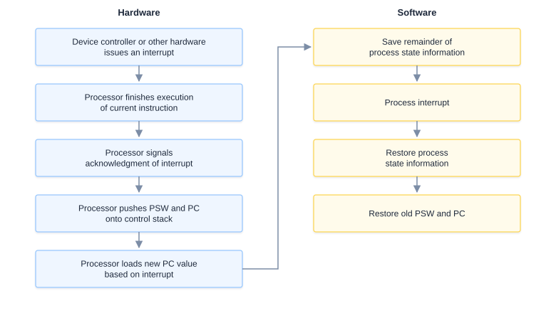
The design must answer two questions: which device interrupted, and which one to serve first when several do.
| Device identification | How it works |
|---|---|
| Multiple interrupt lines | Each device has its own line. Practical only for a few devices |
| Software poll | One shared line. The handler queries each module in turn. Simple but slow |
| Daisy chain (hardware poll, vectored) | The acknowledge signal passes from module to module. The first requester puts its vector (identifier) on the data bus. Position in the chain sets priority |
| Bus arbitration (vectored) | A module must win control of the bus before it raises its interrupt and places its vector |
An interrupt controller such as the Intel 8259A collects many interrupt lines, assigns priorities and passes one interrupt and its vector at a time to the processor. Several controllers can be cascaded.
Direct memory access
For block transfers, the processor programs a DMA module with four things:
- whether to read or write;
- the device address;
- the starting memory address;
- the word count.
The DMA module then moves the data itself, taking the bus for one word at a time (cycle stealing) while the processor carries on. The processor is only paused for those bus cycles, not interrupted. At the end, the DMA module raises one interrupt.
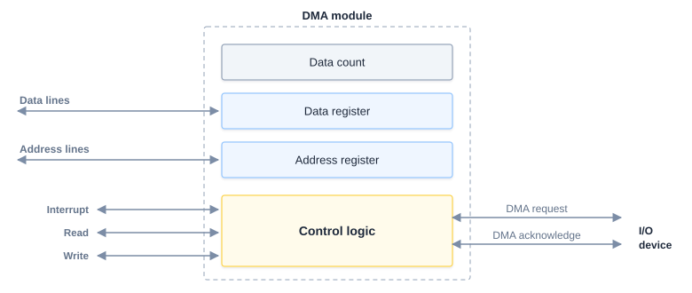
A fly-by DMA controller transfers data directly between the device and memory in a single bus cycle, rather than reading it in and writing it out again.
Direct cache access
At 10–100 Gbps network speeds, even DMA has a problem. Incoming packets land in main memory and then miss in the cache when the processor touches them. Direct cache access (DCA) lets the I/O device place data directly into the processor's cache, usually the shared last-level cache. Intel's Data Direct I/O (DDIO) is one implementation. It cuts memory traffic and latency for packet processing.
Evolution of the I/O function
The I/O function has steadily taken work away from the CPU:
- The CPU controls the device directly.
- An I/O module is added, used with programmed I/O.
- Interrupts are added.
- DMA is added.
- The I/O module becomes a processor with its own instruction set, called an I/O channel.
- The module gets its own local memory, becoming an I/O processor.
| External interface | Summary |
|---|---|
| USB | General peripheral bus with a host-controlled, tiered-star topology. Data rates have grown generation by generation, and the bus also carries power |
| Thunderbolt | High-speed link that carries PCIe and DisplayPort traffic, plus power, over one cable |
| PCI Express | Point-to-point lanes, also used for external expansion |
| SATA | Serial ATA: the common interface for internal disks and SSDs |
| Ethernet | Wired LAN technology. It moved from a shared bus to switched point-to-point links, and from 10 Mbps to 100 Gbps and beyond |
| Wi-Fi (IEEE 802.11) | Wireless LAN, with each generation raising throughput |
The instruction set is the boundary where hardware designer and programmer meet. A machine instruction contains four elements:
- an operation code (opcode), which says what to do;
- a source operand reference;
- a result operand reference;
- a next-instruction reference, usually implicit: it is the PC.
An operand can be in main memory, virtual memory, a register, an I/O device, or the instruction itself (an immediate value). Instructions are written symbolically as mnemonics such as ADD, LOAD and STOR, and are encoded in binary as fields.
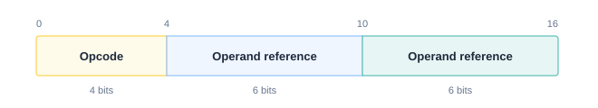
Number of addresses
| Addresses | Form | Meaning | Trade-off |
|---|---|---|---|
| 3 | OP A, B, C | A ← B OP C | Short programs, but long instructions |
| 2 | OP A, B | A ← A OP B | One operand is both source and result |
| 1 | OP A | AC ← AC OP A | An implicit accumulator holds the other operand |
| 0 | OP | Operates on the top of a stack | Very short instructions, more of them |
Fewer addresses mean simpler, shorter instructions but longer programs. Several design decisions interact:
- the operation repertoire;
- the data types;
- the instruction format;
- the number of registers;
- the addressing modes.
Types of operands
- AddressesUnsigned integers that name locations
- NumbersBinary integers (fixed point), floating point (IEEE 754) and packed decimal, where each 4-bit nibble holds one decimal digit
- CharactersText in codes such as ASCII and Unicode
- Logical dataA word treated as a set of independent bits or Boolean flags
x86 adds specialized types, such as packed SIMD vectors for its MMX, SSE and AVX instructions. ARM supports 8-, 16- and 32-bit data and, in 64-bit mode, 64-bit data, with optional floating-point and NEON SIMD units.
Types of operations
| Type | Examples | Notes |
|---|---|---|
| Data transfer | MOVE, LOAD, STORE, PUSH, POP, EXCHANGE | Specify source, destination, length and addressing mode |
| Arithmetic | ADD, SUBTRACT, MULTIPLY, DIVIDE, INCREMENT, NEGATE, ABSOLUTE | May update condition flags. Floating-point versions may run on a separate unit |
| Logical | AND, OR, NOT, XOR, TEST, COMPARE, SHIFT, ROTATE | Logical shift fills with zeros. Arithmetic shift keeps the sign bit. Rotate wraps bits around |
| Conversion | Translate, convert format | Example: binary to decimal, or a table lookup |
| Input/output | INPUT (read), OUTPUT (write), START I/O, TEST I/O | Absent when I/O is memory-mapped |
| System control | Privileged instructions: alter control registers, protection keys | Executable only in kernel mode |
| Transfer of control | JUMP / BRANCH (conditional or unconditional), SKIP, CALL, RETURN | Change the PC |
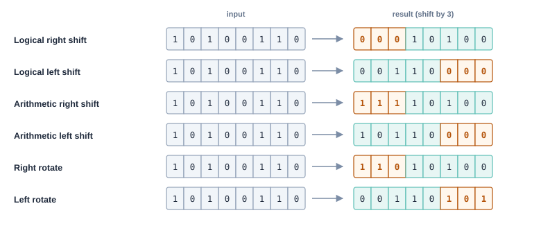
Conditional branches test condition codes or flags set by earlier instructions, such as zero, negative, carry and overflow. The alternative is for the branch instruction itself to compare operands.
Procedure calls need the return address saved somewhere: in a register, at the start of the called procedure, or most flexibly on a stack, which also supports nesting and recursion. Each call pushes a stack frame holding the return address, the parameters, the saved frame pointer and the local variables.
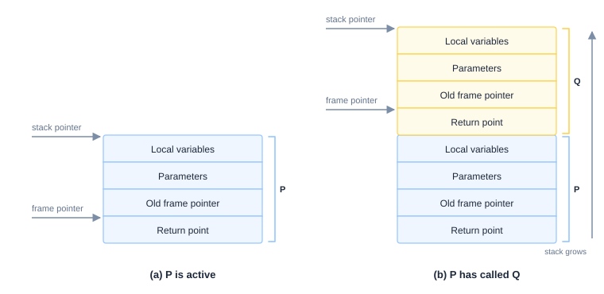
Byte order
- Big-endian: the most significant byte is stored at the lowest address.
- Little-endian: the least significant byte is stored at the lowest address.
x86 is little-endian. ARM can run either way. Byte order matters when data is exchanged between machines or read byte by byte.
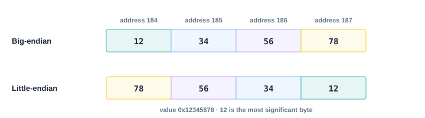
An address field is usually too small to name every location directly. Addressing modes let the same bits be used in different ways. Notation used below:
- A: the contents of the instruction's address field;
- R: a register named by the instruction;
- EA: the effective address of the operand;
- (X): the contents of location or register X.
| Mode | Operand / EA | Advantage | Disadvantage |
|---|---|---|---|
| Immediate | Operand = A | No memory reference for the operand | Operand size limited by the field |
| Direct | EA = A | Simple | Limited address space |
| Indirect | EA = (A) | Large address space | An extra memory reference |
| Register | EA = R | No memory reference, short field | Few registers |
| Register indirect | EA = (R) | Large address space, one memory reference fewer than indirect | Still one memory reference |
| Displacement | EA = A + (R) | Flexible | More complex address arithmetic |
| Stack | EA = top of stack | No address field | Limited applicability |
![Addressing modes. (a) Immediate: the operand is in the instruction. (b) Direct: the address field points to the operand in memory. (c) Indirect: the address field points to a memory word that holds the operand's address. (d) Register: the field names a register holding the operand. (e) Register indirect: the named register holds the operand's memory address. (f) Displacement: a register's contents plus the address field give the operand's address. (g) Stack: the operand is implicitly on top of the stack](static/coa-addressing-modes.svg)
Displacement addressing has three common uses:
- Relative addressing uses the PC as R. Branch targets are encoded as offsets from the current instruction, which suits locality and makes code relocatable.
- Base-register addressing takes the base address from R and an offset from A. It is used for segmentation and for accessing structures.
- Indexing takes the base address from A and an index from R, which is ideal for arrays. Auto-indexing increments or decrements the register automatically. Pre-index and post-index variants combine indexing with indirection.
x86 offers a rich set of modes. Its fullest form computes the address as segment base + base register + index register × scale (1, 2, 4 or 8) + displacement. ARM, as a load/store architecture, uses offset, pre-index and post-index forms with immediate or register offsets.
Instruction formats
A format defines the layout of an instruction's bits. The design questions are these:
- Instruction length: a trade-off between a rich repertoire and compact, fast-to-fetch code. The length should be a multiple of the character size and relate sensibly to the memory transfer width.
- Allocation of bits: more opcode bits give more operations but fewer address bits. The choice also depends on how many addressing modes there are, how many operands, register or memory operands, the number of register sets, address range and address granularity.
- Fixed or variable length: variable-length formats, as in x86, encode common cases compactly and allow rich modes, at the cost of harder decoding. Fixed 32-bit formats, as in classic ARM and RISC, decode quickly and pipeline well.
An x86 instruction can have up to four kinds of prefix: instruction, segment override, operand size and address size. They are followed by:
- the opcode;
- a ModR/M byte;
- a scale-index-base (SIB) byte;
- a displacement;
- an immediate value.
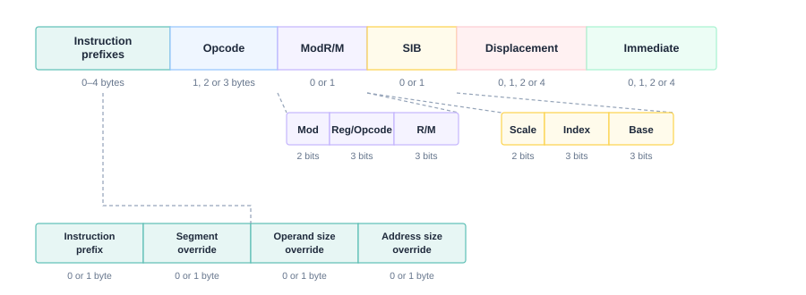
ARM instructions carry a 4-bit condition field, so almost any instruction can be made conditional. The compact Thumb instruction set packs common operations into 16 bits.
A processor must do five things:
- fetch instructions;
- interpret them;
- fetch data;
- process data;
- write data.
For this it needs an ALU, a control unit, internal buses and a set of registers as fast scratch storage.
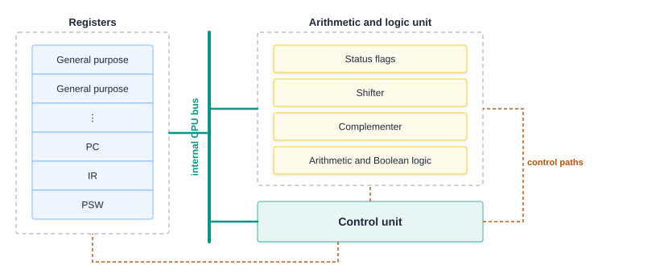
Register organization
User-visible registers are the ones programs can reference:
- general-purpose registers;
- data registers;
- address registers: segment, index and stack pointer;
- condition codes, also called flags.
The design questions are general-purpose versus specialized registers, how many to provide (8 to 32 is common), and how long they should be.
Control and status registers include the PC, IR, MAR and MBR, and the program status word (PSW). The PSW holds these fields:
- the sign, zero, carry, equal and overflow flags;
- the interrupt-enable bit;
- the supervisor bit, which selects kernel or user mode.
The full instruction cycle
With indirect addressing, an extra indirect cycle fetches the operand's address before the execute cycle. So the cycle runs fetch → (indirect) → execute → (interrupt).
Data moves through MAR, MBR and the PC in each sub-cycle. In the fetch cycle, for example:
- The PC goes to MAR.
- Memory returns the instruction through MBR into IR.
- The PC is incremented.
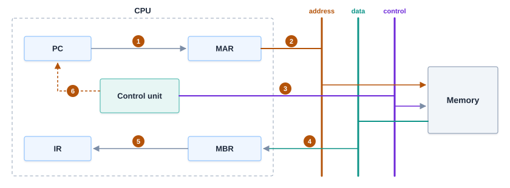
Pipelining
Like an assembly line, a pipeline splits instruction processing into stages and works on several instructions at once, each in a different stage. A six-stage version has these stages:
- FI: fetch instruction;
- DI: decode instruction;
- CO: calculate operands;
- FO: fetch operands;
- EI: execute instruction;
- WO: write operand.
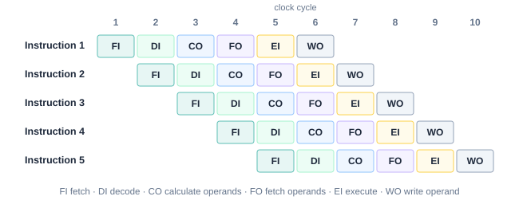
With k stages, cycle time τ and n instructions, the time and speedup are:
T(k,n) = [k + (n − 1)]τ; Sk = nk / (k + n − 1)
The speedup approaches k for long instruction streams. In practice it is limited by three things:
- stages of unequal length;
- overhead from latching data between stages;
- above all, hazards, which stall the pipeline.
| Hazard | Cause | Typical remedies |
|---|---|---|
| Resource (structural) | Two instructions need the same hardware in the same cycle, such as a single memory port | Duplicate resources, for example split instruction and data caches |
| Data | An instruction needs a result that is not yet written. The cases are RAW (read after write, a true dependency), WAR (write after read, an antidependency) and WAW (write after write, an output dependency) | Stalls, operand forwarding (bypassing), compiler scheduling, register renaming |
| Control (branch) | The pipeline fetches the wrong instructions because a branch has not yet resolved | The branch-handling techniques below |
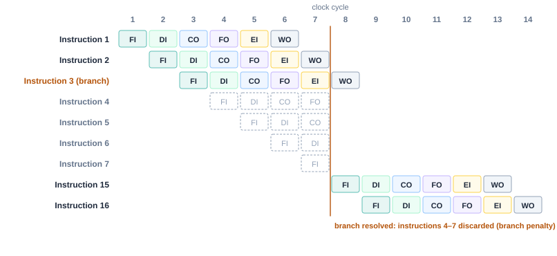
- Multiple streamsFetch both paths of a branch with duplicated pipeline front ends. Costly, and nested branches multiply the streams
- Prefetch branch targetFetch the target as well as the next instruction, and keep it until the branch resolves
- Loop bufferA small, fast memory holding the most recently fetched instructions, so tight loops run without repeated fetches
- Branch predictionGuess the outcome and fetch along the predicted path
- Delayed branchThe compiler fills the slot after a branch with a useful instruction that runs whichever way the branch goes. Used in RISC
Static prediction uses a fixed rule that ignores history. The options are:
- always predict “not taken”;
- always predict “taken”;
- decide by the opcode;
- use a hint the compiler sets.
Dynamic prediction uses each branch's own history:
- A taken/not-taken switch with 1 or 2 history bits. The 2-bit scheme changes its prediction only after two wrong guesses in a row, so a loop's final exit does not upset it.
- A branch history table (also called a branch target buffer), which caches each branch's target address and its prediction state.
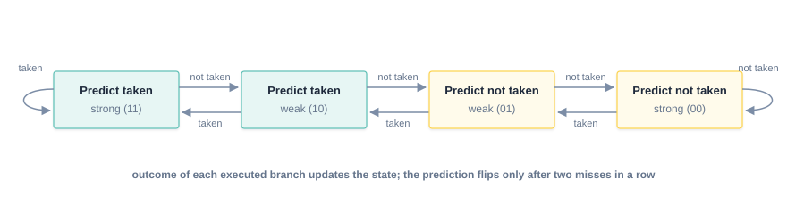
Examples
The Intel 80486 used a five-stage pipeline: fetch, decode 1, decode 2, execute, write-back. Forwarding and early branch-target calculation reduced stalls.
The x86 architecture has these registers:
- general registers;
- segment registers;
- EFLAGS, which holds status and control flags;
- control registers CR0–CR4, which control paging, caching and protection;
- floating-point, MMX, SSE and AVX register files.
Interrupts and exceptions are dispatched through a vector table of up to 256 entries.
The ARM processor has the following features:
- 16 visible general registers, R13 as the stack pointer, R14 as the link register and R15 as the PC;
- a current program status register (CPSR) with condition flags;
- several processor modes: user, system, supervisor, abort, undefined, IRQ and FIQ;
- banked copies of some registers for each exception mode, so handlers can start quickly.
Studies of compiled high-level-language programs found that operations are dominated by assignment, conditional statements and procedure call/return. Procedure call/return was the most time-consuming, because of operand passing and saving state. Most operands are simple scalar variables, mostly local ones.
So instead of adding ever more complex instructions to close the “semantic gap” with high-level languages, RISC optimizes the simple, frequent cases:
- a large number of registers, or compiler-based register allocation;
- careful pipeline design;
- a simple instruction set.
Register windows
Each procedure call gets a fresh window of registers from a large register file. Each window has three parts:
- parameter registers, which overlap with the caller's temporary registers;
- local registers;
- temporary registers, which overlap with the next callee's parameter registers.
Because of the overlap, parameters pass between procedures with no memory traffic. The windows form a circular buffer. Only when the nesting gets too deep do the oldest windows spill to memory. Global variables live in a separate fixed set of registers or in memory.
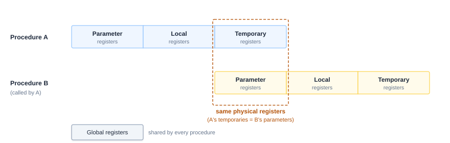
The alternative is compiler-based optimization. The compiler assigns variables to a modest number of registers by graph colouring: variables whose live ranges overlap must get different registers.
Characteristics of RISC
- One instruction completes per machine cycle.
- Operations are register to register. Only LOAD and STORE touch memory.
- Few, simple addressing modes.
- Few, simple, fixed-length instruction formats, with fields in fixed positions for fast decoding.
- Hardwired control rather than microcode.
Why CISC was attractive
Complex instruction sets aimed to make compilers simpler and programs smaller and faster. In practice:
- Compilers struggled to use the complex instructions.
- Programs were not much smaller in bits.
- The extra control logic slowed down even the simple instructions.
Pipelining in RISC
Regular instructions pipeline well. Compilers add these optimizations:
- Delayed branch: the branch takes effect after the following instruction, so the compiler moves a useful instruction, or else a NOP, into that delay slot.
- Delayed load: the instruction after a load must not use the loaded register, and the compiler reorders the code to satisfy this.
- Loop unrolling: the loop body is replicated so there are fewer branches and more instructions available for scheduling.
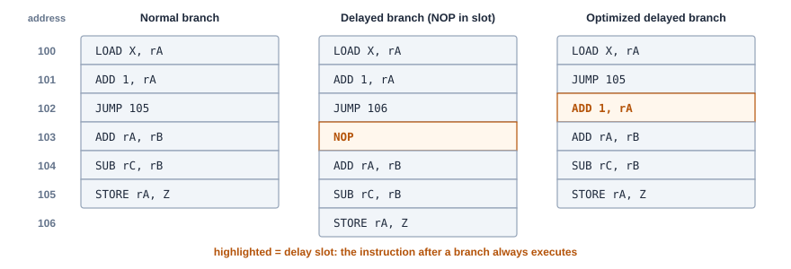
The MIPS R4000 deepened its pipeline into a superpipeline of eight stages by splitting the cache accesses.
RISC versus CISC today
The debate never got a clean answer. Programs, compilers and technology differ too much for fair comparisons. The two designs have also converged:
- RISC chips gained more instructions and features.
- CISC chips such as x86 translate their instructions internally into RISC-like micro-operations and execute those on a pipelined, superscalar core.
A superscalar processor has several independent pipelines and issues more than one instruction per cycle. That is different from superpipelining, which splits stages into finer pieces so the clock can run faster, with one issue per (shorter) cycle. The two approaches can be combined.
How much parallelism is available depends on two things:
- Instruction-level parallelism: how independent the program's instructions are.
- Machine parallelism: how many pipelines the hardware has and how far ahead it can look.
| Limitation | Description |
|---|---|
| True data dependency (RAW) | An instruction needs a value the previous one produces. It must wait |
| Procedural dependency | Instructions after a branch depend on its outcome. Variable-length instructions also block parallel decoding |
| Resource conflict | Two instructions compete for one functional unit, port or bus. Fixed by duplicating hardware |
| Output dependency (WAW) | Two instructions write the same register, and the later write must land last |
| Antidependency (WAR) | An instruction must not overwrite a register before an earlier instruction has read it |
Instruction issue policies
- In-order issue, in-order completion: the simplest policy. Any stall holds everything behind it.
- In-order issue, out-of-order completion: long operations no longer block short ones that follow, but output dependencies must be checked.
- Out-of-order issue, out-of-order completion: decoded instructions wait in an instruction window, a buffer from which any ready instruction can issue. This gives the most lookahead, but antidependencies now matter too.
Register renaming
WAR and WAW hazards are name conflicts: they arise only because registers are reused, not because data truly flows between the instructions. The hardware removes them by giving each new result its own physical register. Later readers are pointed at the right physical copy. Only true dependencies are left.
Superscalar execution
- Fetch several instructions per cycle, with branch prediction.
- Decode them, rename registers and identify dependencies.
- Dispatch ready instructions to functional units, out of order.
- Execute them, speculatively where predictions are involved.
- Retire (commit) results in program order through a reorder buffer, so exceptions and mispredictions can be undone cleanly.
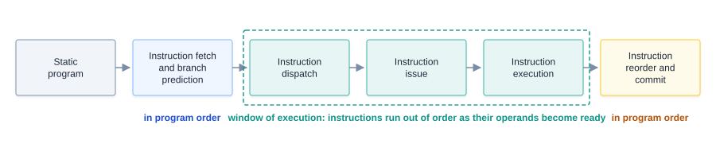
Intel Core microarchitecture
The pipeline has three parts.
- Front end. A branch prediction unit, an instruction fetch and predecode unit, an instruction queue, and decoders that translate x86 instructions into micro-ops. A micro-op cache and a loop stream detector add further help.
- Out-of-order engine. Register renaming, a reorder buffer and a scheduler that dispatches micro-ops to several execution ports.
- Back end. Integer, floating-point, SIMD and load/store units, backed by an L1 data cache.
ARM Cortex-A8
The Cortex-A8 is a dual-issue, in-order superscalar core. Its pipeline has four parts:
- a 13-stage integer pipeline;
- an instruction fetch unit with a branch predictor;
- a decode unit that pairs instructions when the rules allow it;
- two ALU pipelines and one load/store pipeline, plus the NEON SIMD unit.
Keeping issue in order saves power and area, which matters for mobile designs. The smaller Cortex-M3 uses a simple three-stage pipeline (fetch, decode, execute) for microcontrollers.
| Flynn's class | Meaning | Examples |
|---|---|---|
| SISD | Single instruction stream, single data stream | A classic uniprocessor |
| SIMD | One instruction stream operates on many data elements in lockstep | Vector and array processors, SIMD extensions, GPUs |
| MISD | Several instruction streams on one data stream | Never built commercially |
| MIMD | Several processors each run their own instructions on their own data | SMPs, NUMA machines, clusters |
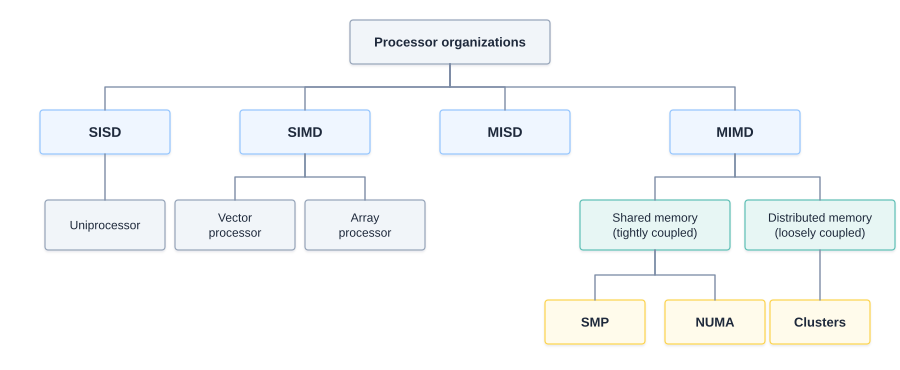
MIMD machines are either tightly coupled or loosely coupled:
- Tightly coupled machines have shared memory. They are either SMP, with uniform access time, or NUMA, with non-uniform access time.
- Loosely coupled machines have distributed memory. These are clusters, which communicate over a network.
Symmetric multiprocessors (SMP)
An SMP has two or more similar processors that share main memory and I/O through a bus or other interconnect. Access time to any memory location is about the same for every processor. All processors can perform the same functions, and a single OS controls the whole system.
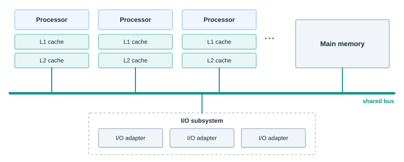
Compared with a uniprocessor, an SMP offers:
- better performance for parallel workloads;
- availability, because one processor failing does not halt the system;
- incremental growth by adding processors;
- scaling, with a range of products at different prices.
The OS must handle several things:
- simultaneous concurrent processes, with re-entrant kernel code;
- scheduling across processors;
- synchronization;
- memory management;
- reliability and fault tolerance.
Cache coherence
With a private cache per processor, several copies of one line can exist. A write to one copy makes the others stale. There are two families of solution:
- Software solutions: the compiler and OS mark shared data as non-cacheable, or manage it carefully. This is cheap in hardware, but conservative.
- Hardware protocols, which are transparent to software, of two kinds:
- Directory protocols: a central directory records which caches hold which lines. They scale to large systems with many buses or complex interconnects.
- Snoopy protocols: every cache watches (snoops) the shared bus and reacts to others' transactions. Natural for bus-based SMPs.
Snoopy protocols use one of two strategies:
- Write-invalidate: a writer first invalidates all other copies, then owns the line exclusively. Most common.
- Write-update: a writer broadcasts the new data to all copies.
The MESI protocol
MESI is the classic write-invalidate protocol. Each line carries two state bits, giving four states:
| State | Meaning | Memory copy | Other caches |
|---|---|---|---|
| Modified (M) | Line changed. This cache owns the only valid copy | Stale | No copies |
| Exclusive (E) | Line clean, present only in this cache | Valid | No copies |
| Shared (S) | Line clean, possibly present in other caches | Valid | May hold copies |
| Invalid (I) | Line holds no valid data | — | — |
![MESI cache-coherence state transitions for one cache line. This processor's accesses (solid): from Invalid, a read miss goes to Shared if another cache holds the line, or to Exclusive if none does; a write miss goes to Modified. A write hit in Shared (after invalidating other copies) or in Exclusive goes to Modified. Snooped bus activity (dashed): another processor's read moves Exclusive and Modified lines to Shared, with Modified data written back; another processor's write invalidates the line from any state](static/coa-mesi.svg)
Some typical transitions:
- A read miss loads the line as E if no other cache has it, or as S if another does.
- Writing a line in S first sends an invalidate to the other caches, then moves the line to M. Writing a line in E moves it to M silently.
- If a cache snoops another processor reading a line it holds in M, it supplies or writes back the data and drops to S.
Multithreading and chip multiprocessors
Some terms first:
- A process owns resources such as an address space and open files.
- A thread is a dispatchable unit of work within a process.
- Explicit multithreading runs instructions from different threads, either user threads or OS threads, at the same time in hardware.
- Implicit multithreading extracts threads from one sequential program, through the compiler or speculation.
| Approach | How threads share the processor |
|---|---|
| Interleaved (fine-grained) | Switches threads every clock cycle, skipping threads that are stalled |
| Blocked (coarse-grained) | Runs one thread until it hits a long-latency event, such as a cache miss, then switches |
| Simultaneous (SMT) | A superscalar core issues instructions from several threads in the same cycle. Intel calls this Hyper-Threading |
| Chip multiprocessing | Several complete cores on one chip, each running its own thread: multicore |
![Approaches to executing multiple threads, shown as issue slots (columns) per clock cycle (rows), coloured by thread A to D, blank when idle: single-threaded scalar; interleaved multithreading scalar, switching thread every cycle; blocked multithreading scalar, switching on a long stall; superscalar with one thread, leaving many slots empty; interleaved multithreading superscalar; simultaneous multithreading, filling slots from several threads in one cycle; and a chip multiprocessor, with two cores each running its own thread](static/coa-multithreading.svg)
Clusters
A cluster is a group of whole computers (nodes) joined by a fast network that work together as one unified resource. Clusters offer:
- absolute scalability;
- incremental scalability;
- high availability;
- superior price/performance, because they are built from commodity parts.
Clusters are configured in several ways: passive standby, active secondary, separate servers, servers connected to disks, and servers sharing disks.
Cluster design must address failure management, through failover and failback, and load balancing. Computations are parallelized by a parallelizing compiler, by parallelized applications, or by running the same program over many inputs (parametric computing). Middleware presents a single-system image across the cluster.
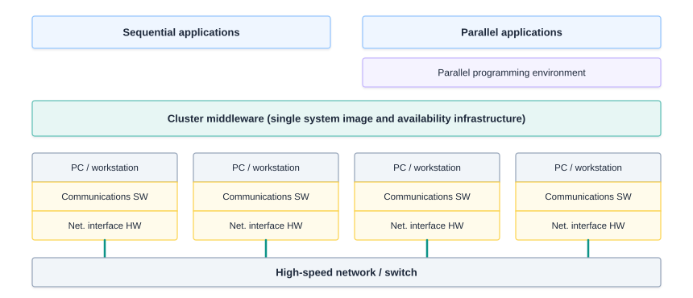
Compared with an SMP:
- An SMP is easier to manage, closer to uniprocessor programming, smaller and lower in power.
- A cluster scales further and is more available.
Non-uniform memory access (NUMA)
In a NUMA machine, every processor can reach all memory through one shared address space, but access to its own node's memory is faster than access to remote nodes' memory. CC-NUMA adds cache coherence, typically through directories.
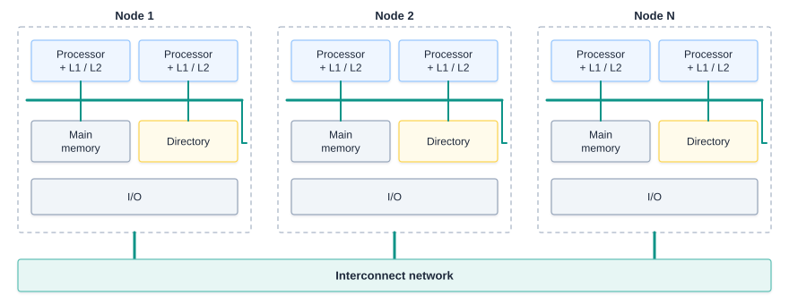
NUMA keeps the SMP programming model while scaling past the point where a single bus saturates. It works well only if most accesses stay local, which needs good locality and OS page placement and migration.
Cloud computing
NIST lists five essential characteristics of cloud computing:
- broad network access;
- rapid elasticity;
- measured service;
- on-demand self-service;
- resource pooling.
| Service model | Provider manages | Customer controls |
|---|---|---|
| SaaS (software) | Everything, including the application | Use of the application and limited settings |
| PaaS (platform) | Infrastructure, OS and runtime | Their own deployed applications |
| IaaS (infrastructure) | Physical hardware and virtualization | OS, storage, deployed applications and some networking |
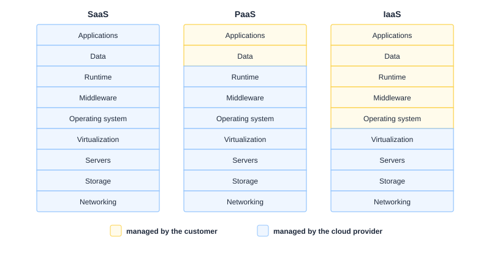
There are four deployment models:
- public: owned by a provider and open to anyone;
- private: run for a single organization;
- community: shared by organizations with common concerns;
- hybrid: a combination of these.
The NIST reference architecture names five actors: consumer, provider, auditor, broker and carrier.
A multicore chip puts several cores on one die. Pipelining and superscalar issue had reached diminishing returns. Power grows faster than performance as single-core complexity rises, and memory takes an ever-larger share of the transistor budget.
Several simpler cores can deliver close to linear gains, if the software is parallel. Amdahl's law and the overheads of communication and coherence limit those gains.
Multicore helps most with these kinds of application:
- multithreaded native applications;
- multi-process applications;
- Java applications, whose virtual machine is itself multithreaded;
- multi-instance applications;
- virtualized servers.
Multicore organization
The main design variables are these:
- the number of cores;
- the number of cache levels;
- which caches are private and which are shared.
A common layout gives each core private L1 and L2 caches and shares one L3. A shared L3 brings four advantages:
- It cuts overall miss rates.
- Data shared between cores is stored only once.
- Capacity is reallocated dynamically between cores.
- Communication between cores is easy.
Many designs also use simultaneous multithreading on each core.
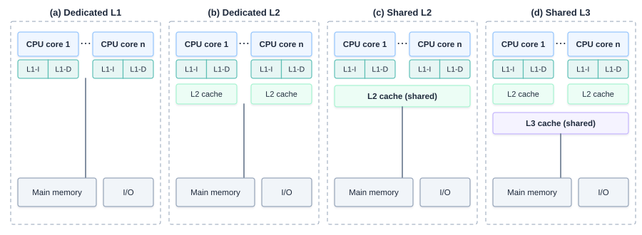
Heterogeneous multicore
Cores need not be identical. Common combinations:
- CPUs paired with GPUs on one chip, as in AMD APUs;
- CPUs paired with DSPs;
- big and small CPU cores of the same instruction set, such as ARM big.LITTLE, which trades performance against power.
Heterogeneous System Architecture (HSA) lets CPU and GPU share one virtual address space and coherent memory. Work can then be handed over by passing pointers rather than copying data.
The ARM Cortex-A15 MPCore is a multicore example. It uses a Generic Interrupt Controller (GIC) to route and prioritize interrupts across cores, and a Snoop Control Unit to keep the L1 data caches coherent, using a MESI-based protocol. In the same way, Intel Core i7 parts have private L1 and L2 caches per core, a shared L3, SMT, and on-chip memory controllers and interconnect.
GPUs and CUDA
A GPU dedicates most of its transistors to arithmetic units rather than to caches and control logic. Thousands of lightweight threads hide memory latency: while some threads wait for memory, others run. GPUs suit data-parallel work with high arithmetic intensity, such as graphics, scientific simulation and machine learning, and fit the SIMD model.
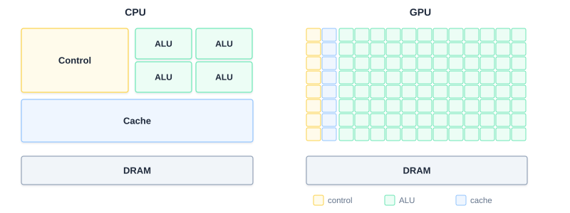
NVIDIA's CUDA (Compute Unified Device Architecture) organizes the work in a hierarchy:
- A program launches a kernel over a grid of thread blocks.
- Each block contains many threads.
- The threads of a block are scheduled in groups of 32 called warps, which run in lockstep.
| CUDA term | GPU hardware |
|---|---|
| Grid (kernel) | The whole GPU |
| Block | A streaming multiprocessor (SM) |
| Thread | A CUDA core, also called a streaming processor |
| Warp | A group of 32 threads that the SM's warp schedulers issue together |
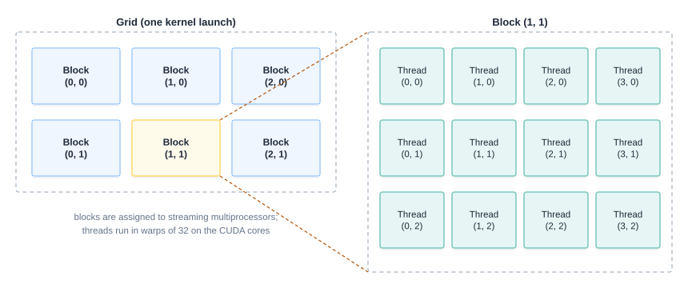
Each SM contains the following:
- many CUDA cores, each with integer and floating-point units;
- special function units;
- load/store units;
- warp schedulers;
- a large register file;
- an L1 cache and shared memory, which the threads of a block can share.
Beyond the SMs come a shared L2 cache, constant and texture memory, and off-chip global memory (DRAM).
Every instruction cycle is a sequence of micro-operations: register transfers, ALU operations and memory or bus actions, each finished within one clock period. The control unit's job is to issue the control signals that make each micro-operation happen at the right time.
Micro-operation sequences
| Cycle | Time step | Micro-operations |
|---|---|---|
| Fetch | t1 | MAR ← (PC) |
| t2 | MBR ← Memory; PC ← (PC) + I | |
| t3 | IR ← (MBR) | |
| Indirect | t1 | MAR ← (IR(Address)) |
| t2 | MBR ← Memory | |
| t3 | IR(Address) ← (MBR(Address)) | |
| Interrupt | t1 | MBR ← (PC) |
| t2 | MAR ← Save-address; PC ← Routine-address | |
| t3 | Memory ← (MBR) | |
| Execute (ADD R1, X) | t1 | MAR ← (IR(Address)) |
| t2 | MBR ← Memory | |
| t3 | R1 ← (R1) + (MBR) |
In the table, I is the instruction length. Two rules govern how micro-operations are grouped into time steps:
- The proper sequence of events must be followed. For example, MAR must be loaded before memory is read.
- Conflicts must be avoided. For example, the same register must not be read and written in one step.
Execute-cycle sequences vary by opcode. ISZ (increment and skip if zero) and BSA (branch and save address) are two classic examples. A 2-bit instruction cycle code (ICC) records which of the four cycles comes next: fetch, indirect, execute or interrupt.
Control unit inputs and outputs
The control unit takes four inputs:
- the clock;
- the instruction register;
- the flags;
- control signals from the control bus, such as interrupt requests.
It produces three kinds of output:
- control signals within the processor, which gate data paths and select ALU functions;
- control signals to the control bus, such as memory read and write;
- acknowledgements.
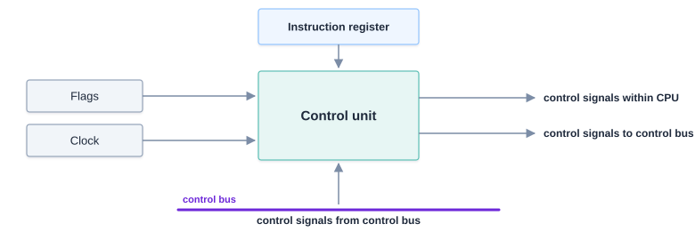
The Intel 8085 is a worked example of the external signals involved: address and data, timing and control, memory and I/O initiated, interrupt-related, and CPU initialization.
| Aspect | Hardwired control | Microprogrammed control |
|---|---|---|
| Implementation | A combinational logic circuit. The opcode is decoded and combined with a timing counter (T1, T2, …) and flags, and Boolean equations generate the control signals | Each instruction's control-signal patterns are stored as microinstructions in a control memory. A microprogram sequencer steps through them |
| Speed | Fast | Slower, because control memory must be read for each step |
| Design and change | Hard to design and test for complex instruction sets, and inflexible | Systematic. Easy to change or extend by rewriting the microcode |
| Typical use | RISC processors | CISC processors, emulation, and machine families with one instruction set across different hardware |
Microprogrammed control
A microinstruction holds control bits and a next-address or jump condition field.
- In horizontal microcode, each bit drives one control line directly. This gives wide microinstructions with a lot of parallelism.
- In vertical microcode, fields are encoded and decoded into signals. This gives narrower microinstructions with less parallelism.
The control unit loops through these steps:
- The sequencing logic places an address in the control address register.
- The addressed microinstruction is read into the control buffer register.
- Its control bits are issued.
- The next address is chosen: the next sequential address, a jump target from the microinstruction, or the start of the routine for the opcode in IR.
Microinstruction sequencing has two goals: keep microinstructions small and make address generation fast. The next-address techniques are:
- two address fields;
- one address field;
- variable format.
The next address can be generated in several ways:
- explicitly, from a field;
- by mapping from the opcode;
- by adding to the current address;
- from a residual control register;
- implicitly, by incrementing.
The DEC LSI-11 is a classic microprogrammed processor. It uses a fairly vertical microinstruction format and a control store of a few thousand words.
The OS is the program that controls application execution and acts as an interface between applications and hardware. Its two aims are convenience and efficiency.
It provides these services:
- program creation, through editors and debuggers;
- program execution;
- access to I/O devices;
- controlled access to files;
- system access and protection;
- error detection and response;
- accounting.
It sits behind three interfaces: the ISA, the ABI (application binary interface) and the API.
Types of operating system
- Systems are either interactive, where the user works with the program directly, or batch, where jobs are queued and run without the user.
- Systems are either uniprogrammed, running one program at a time, or multiprogrammed, keeping several programs in memory and switching between them.
Early systems had no OS: the programmer loaded and ran jobs by hand. Simple batch systems then added a resident monitor, which read jobs from an input device and controlled the sequence through a job control language.
The monitor needed four hardware features:
- memory protection, so user programs cannot alter the monitor;
- a timer, so no job can monopolize the machine;
- privileged instructions, which only the monitor can execute;
- interrupts.
Multiprogramming keeps the processor busy: when one job waits for I/O, another runs. Time sharing extends this to many interactive users, giving each a slice of processor time.
The two differ in what they aim for:
- Batch multiprogramming aims to maximize processor use and takes its directives from job control language.
- Time sharing aims to minimize response time and takes its commands from a terminal.
Scheduling
| Level | Decision |
|---|---|
| Long-term | Which jobs to admit to the system as processes. Controls the degree of multiprogramming |
| Medium-term | Which processes to swap into or out of main memory |
| Short-term (dispatcher) | Which ready process runs next on the processor. Runs very often |
| I/O | Which pending I/O request a device handles next |
The OS keeps a process control block (PCB) for each process. It holds:
- an identifier;
- the state;
- the priority;
- the program counter;
- memory pointers;
- context data, the saved register contents;
- I/O status;
- accounting information.
Processes waiting for the processor sit in queues. An interrupt or service call passes control to the OS, which then dispatches the next ready process.
Memory management
In a uniprogramming system, memory holds just the OS and the current program. In a multiprogramming system, the user part of memory is subdivided among processes, and keeping enough ready processes in memory is the OS's main memory task.
These techniques evolved in order:
- SwappingBlocked processes are moved out to disk to make room for ready ones
- Fixed partitioningMemory is split into fixed-size regions, of equal or unequal size. Wastes space inside partitions (internal fragmentation)
- Variable partitioningEach process gets exactly what it needs. Holes appear between processes over time (external fragmentation), and compaction is needed to merge them
- PagingMemory is divided into small equal frames and each process into equal pages. Any page can go in any free frame, and a per-process page table maps pages to frames. Logical addresses (page, offset) are translated in hardware into physical addresses (frame, offset)
- Virtual memoryDemand paging: only the pages in use need be in memory, and a missing page causes a page fault that the OS services from disk. A process can then be larger than main memory. If replacement is poor the system thrashes, spending its time moving pages
- SegmentationMemory is divided into variable-size, programmer-visible segments (code, data, stack), each with its own protection and sharing. Usually combined with paging
Page tables live in main memory, and for large address spaces they are themselves paged (multilevel tables) or replaced by an inverted page table hashed on the page number.
Every memory reference therefore needs a table lookup first. The translation lookaside buffer (TLB) is a small cache of recent page-table entries that makes most translations take no extra memory access. After translation, the physical address goes to the cache and, on a cache miss, to main memory.
x86 and ARM memory management
x86 offers both segmentation and paging. In segmentation:
- A logical address is a segment selector plus an offset.
- Segment descriptors hold each segment's base, limit and access rights.
- There are four privilege levels (rings 0–3).
In paging:
- The linear address that segmentation produces is translated through a multilevel page directory and page tables.
- Page sizes are 4 KB, or larger with large pages.
- Each page has protection bits, read/write and user/supervisor.
ARM uses a similar page-table walk for its virtual addresses. Memory is divided into sections (1 MB) and pages (4 KB or 64 KB), with separate TLBs for instructions and data. Domains and access-permission bits provide access control.